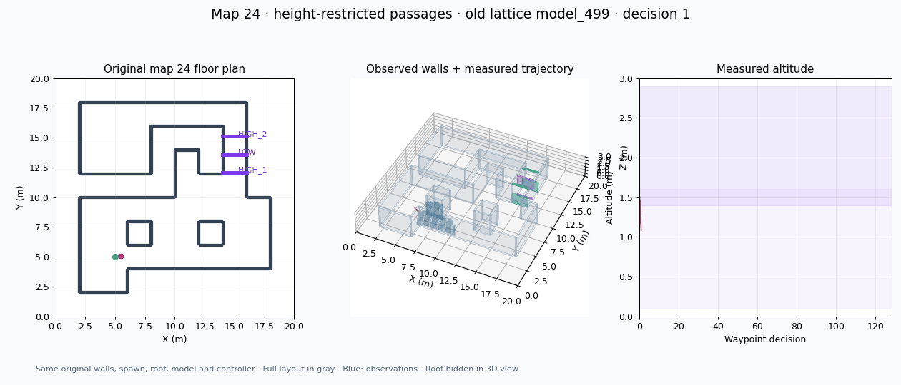
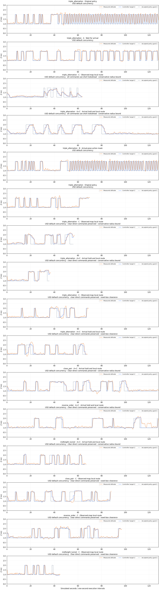

Waypoint execution experiments
Same height-restricted maps · September lattice model_499 · Evaluation only · 30 October 2026
What changed
- A · Wait for arrival. Keep the accepted policy goal until its 3D error is at most 0.20 m, or a four-second lease expires. This tests premature interruption without unbounded persistence.
- B · Actual-pose action mask. Check the segment from the true pose to each candidate against the online occupancy map, rather than relying on a pre-existing graph edge. Unknown and occupied voxel interiors are blocked; padded and self actions remain masked. This is a point/voxel guard, not a vehicle-clearance guarantee.
- C · Observed-map local route. Route through observed free voxel centers with a conservative 0.40 m margin from known occupied voxel boxes. The executor generates intermediate commands and can move a known-free policy goal to a safe voxel center within 0.35 m. If needed it examines other candidates in learned-policy score order. Every rejection, projection and accepted goal is logged.
The A+C combination was declared before testing. Local-route arms add an execution layer and may override the policy's highest-ranked proposal; they are not an unchanged-policy-only rollout. No manual gate coordinates or full reference geometry enter any intervention.
A reproducibility limit that matters
Yesterday's unchanged policy failed after 128 seconds with 89 target-height changes and only the first gate crossed. Today's initial fresh unchanged baseline passed all three gates in 66 seconds with 20 target-height changes. Thus passing an intervention run alone cannot establish that it fixed yesterday's failure.
The maps and weights are byte-identical, but physical GPU and simulated trajectories differ. Seeds do not guarantee identical closed-loop simulator behavior. Read the runs as diagnostic observations rather than statistical success rates or isolated causal proofs.
Replay yesterday's failed baseline

A sensor-mount blind spot found during testing
Initial strict pose-mask and local-route arms stopped at the first interval. CPU reconstruction found all seven graph candidate segments enter unknown cells only 0.02–0.03 m from the robot. The localized robot-to-sensor mount is 0.1414 m long and the map voxel is 0.2 m.
The follow-up comparison uses the existing calibrated rigid-mount helper in copied intervention maps only. It requires a mount shorter than one voxel, matching measured extrinsics, an already observed-free sensor cell, and no occupied or out-of-map cells. It never changes the raw observations or clears a known obstacle. Baseline policy behavior and the arrival lease do not use this copied-map correction.
This is a short calibrated mount-support assumption, not general unknown-space filling. The initial blocked runs remain recorded separately: initial strict-check results.
Keep executor revisions separate
The first route executor shortened every clear command to a 0.8 m lookahead. Revised runs preserve a verified safe direct command and insert intermediate commands only for bends; the combined lease measures arrival at the executable projected endpoint.
Two distance models retain the same 0.40 m threshold. The initial model subtracts a voxel half-diagonal from occupied-center distance, a conservative enclosing-sphere lower bound. The voxel-box revision computes point-to-box and segment-to-box distances directly and uses a matching voxel-center free mask. An independent reviewer cross-checked160 random segments with SciPy minimization and1320 voxel centers atfour margins. Exactness is relative to observed occupied boxes, not a physical vehicle or unobserved obstacles.
One complete arrival-hold rollout was saved before process exit -11. Its GIF was recovered from recorded files without another flight; that nonzero exit remains in the results. Separate startup-stalled attempts produced no navigation result. A fresh baseline under the matched USD single-worker setting passed all gates in70 seconds; another fresh baseline failed at128 seconds.
Measured results
The most promising candidate is C with calibrated sensor-mount support, unchanged safe direct commands, and exact occupied-voxel-box clearance. In individual seed-42 runs it crossed all required openings on the triple-alternation map in69 seconds, close_pair in88 seconds, and reverse_order in97 seconds. It used8 detour intervals and2 projected goals in the triple run; the representative far point was visited. The mid-height tunnel was not crossed and stopped on utility exhaustion at45 seconds.
Waiting for arrival alone reduced command-height changes from96 to36 in the displayed failing-baseline comparison, but still crossed only the first gate in128 seconds. Actual-pose point masking also failed after the first gate:89 height changes,0 requested straight segments intersecting reference solids, but40 below0.4 m reference clearance. These observations support distinguishing point feasibility from execution clearance; they do not isolate a sole causal factor.
Combining arrival hold with exact-box routing crossed all triple-map gates by68 seconds but then stopped because no admissible route was found. This is a gate-crossing result, not completed exploration. The conservative-distance combination passed gates on the close and reversed cases but used the full128-second budget; it did not pass the mid-height tunnel.
Baselines varied: yesterday128 seconds failed, today's initial66-second baseline passed, another128-second baseline failed, and the matched USD single-worker baseline passed in70 seconds. No success-rate or reliable-fix claim follows from these single intervention runs, nor is the69-versus70 comparison evidence of a speed improvement.
The old weights, original map bytes, spawn and roof were retained. No training or dependency changes were made. All evaluation used one environment on physical GPU1. Raw observations were not altered by the calibrated planning-copy support. All new candidate runs have explicit stop reasons, and the recovered arrival-hold rollout retains its abnormal process-exit record. Future work should separately test missing intermediate-height graph actions and planner completion/coverage conditions, then repeat matched trials before changing training defaults.
All arms have at most 128 one-second execution intervals. Accepted goals, local subgoals and execution intervals are different counts. A cycle window spans eight intervals with no occupancy changes, at least four command-height switches, XY extent below 0.6 m and net XY displacement below 0.2 m. Zero contact ticks do not certify collision-free flight. Planner completion is not full coverage.
Review each measured flight

Download GIF
Show the unchanged map geometry

Orange: measured physical flight. Blue: observations. Gray: full-layout context used only for display. The roof is physically present and hidden only in the 3D view.
Policy goals versus executed targets

Local-route commands may use intermediate heights that are absent from the old lattice. Smoother altitude alone is not success: check actual gate crossings, progress, contacts and explicit failure reasons.
Interpretation and artifacts
Point masking uses physical mapper corner-origin indexing; the legacy lattice graph itself remains unchanged. Straight checks enumerate positive-length voxel intersections; exact face/edge touching follows floor-assigned voxel semantics. The positive-margin route additionally uses conservative occupied-cell distance bounds. Its search is bounded at 20,000 expansions; “no route found” includes endpoint and search-budget failures and does not prove geometric impossibility.
A startup-stalled attempt is preserved separately and does not count as a navigation failure. Raw planner inputs, proposed scores, accepted goals, local routes and sampled controller predictions are retained on the server. Follow-up checks reuse the earlier map files; they are individual diagnostics.
Download review GIFs, exact maps and reports · Measured results · Experiment plan · Yesterday's experiments · 32-map baseline gallery